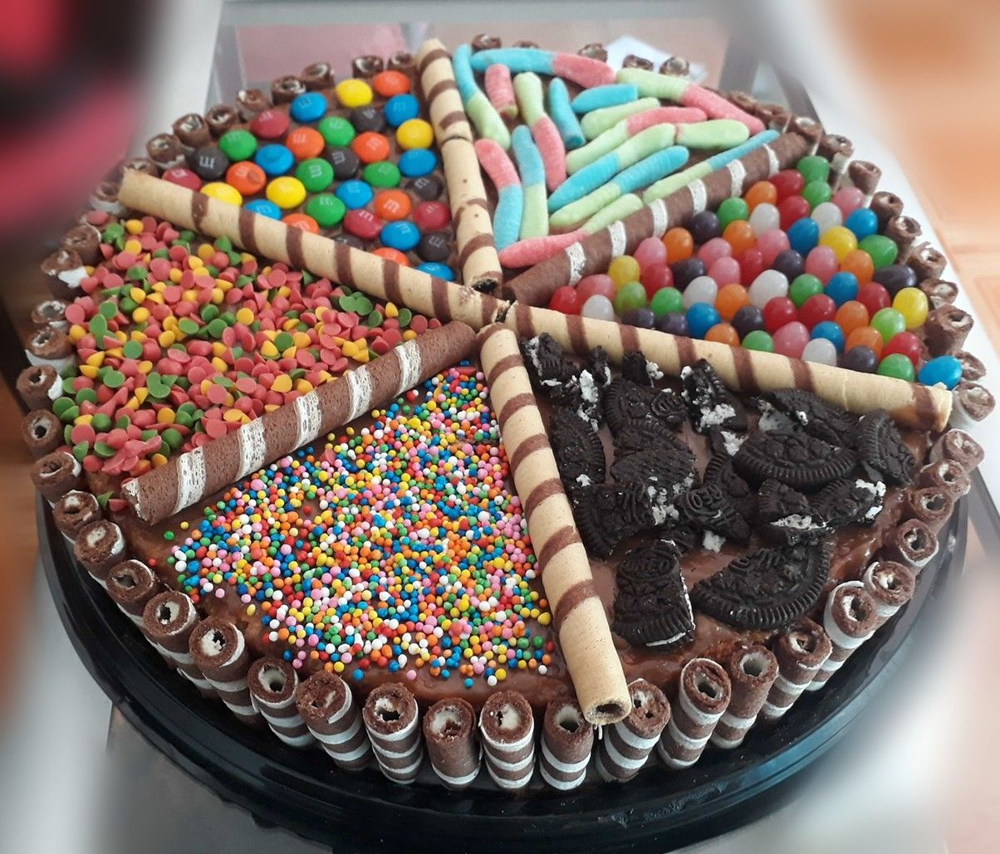

Torta de Chocolate Clásica
Una torta espectacular con múltiples capas de bizcocho y cobertura de chocolate. Perfecta para celebrar.
Ingredientes (para 2 bizcochos):
- 200g de mantequilla
- 200g de azúcar
- 4 huevos
- 200g de harina
- 100g de cacao en polvo
- 2 cucharaditas de polvo de hornear
- 1 taza de leche
- 1 cucharadita de extracto de vainilla
- Una pizca de sal
Cobertura:
- 300g de chocolate amargo
- 200g de mantequilla
- 100g de azúcar impalpable
- 100g de crema
Preparación del Bizcocho:
- Precalentar horno a 180°C y engrasar dos moldes redondos.
- Cremar mantequilla y azúcar hasta obtener una mezcla pálida.
- Agregar huevos uno a uno, batiendo bien.
- Mezclar harina, cacao, polvo de hornear y sal.
- Incorporar la mezcla seca alternando con la leche.
- Agregar vainilla.
- Dividir entre los dos moldes.
- Hornear 30-35 minutos.
- Enfriar completamente.
Preparación de la Cobertura:
- Derretir chocolate con mantequilla a baño maría.
- Incorporar azúcar impalpable.
- Agregar crema y mezclar bien.
- Dejar enfriar ligeramente.
Armado:
- Colocar un bizcocho sobre la base de presentación.
- Extender cobertura sobre la primera capa.
- Colocar el segundo bizcocho encima.
- Cubrir completamente la torta con cobertura.
- Decorar según se desee.